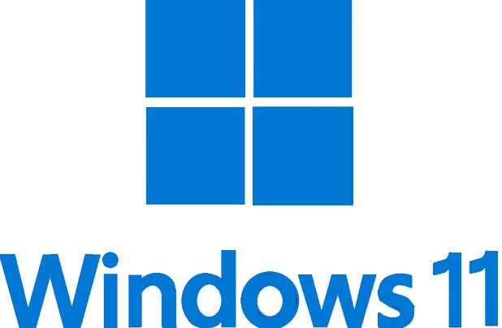
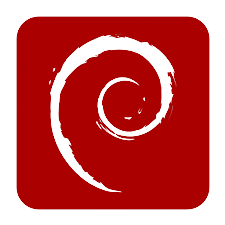

A propos :
Je m'appelle Killian. Âgé de 19 ans, je suis en deuxième année de BTS Services Informatiques aux Organisations (SIO) option Solutions d'Infrastructure, Systèmes et Réseaux (SISR). Depuis mes plus jeunes années, je suis attiré par l'informatique et les nouvelles technologies. C'est donc pourquoi je me suis tourné vers cette formation
Mes compétences
Manipulation de Routeurs et Switch Cisco Utilisation de Cisco Packet Tracer pour le CCNAv7
Virtualisation avec VirtualBox dans le cadre de travaux pratiques Téléphonie IP avec Asterisk
Certification Stormshield - CSNE v4 Cisco CCNAv7 - Présentation des Réseaux v7.02 Notions de base sur commutation routage et sans fil v7.02
Manipulation de pare-feu PfSense
HTML CSS JavaScript PHP SQL
Python Java MySQL
Windows 7 Windows 10  Windows 11 Windows Server 2019
Linux Ubuntu  Debian
Anglais - Niveau B2 Allemand - Niveau B1